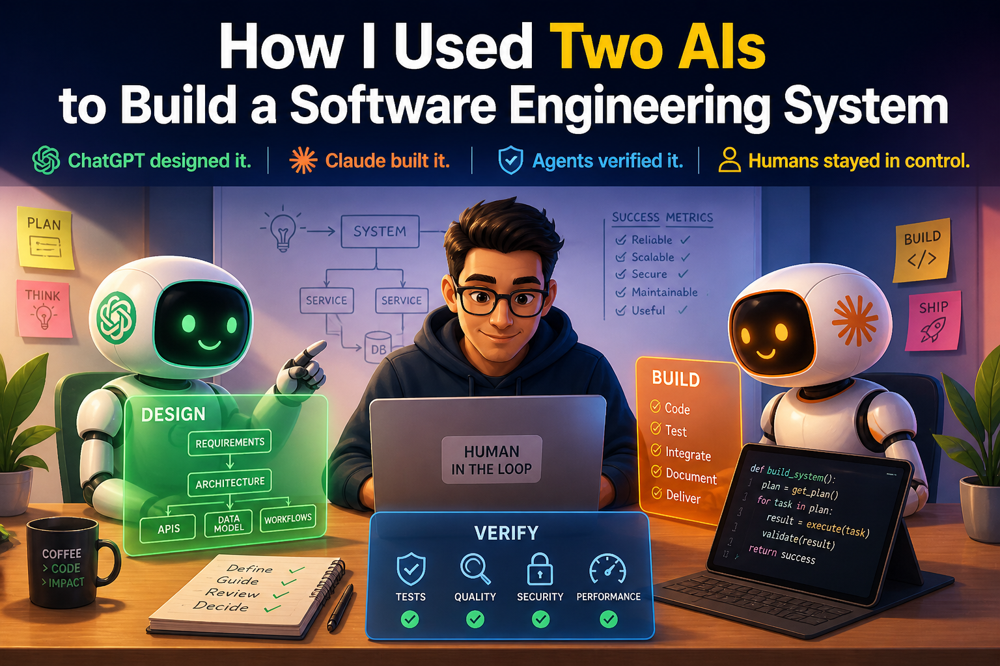
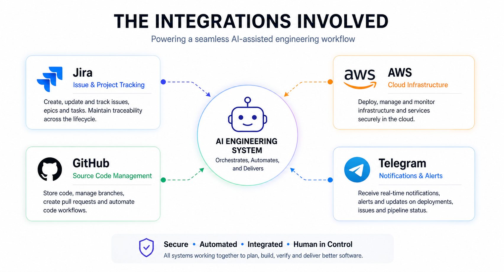
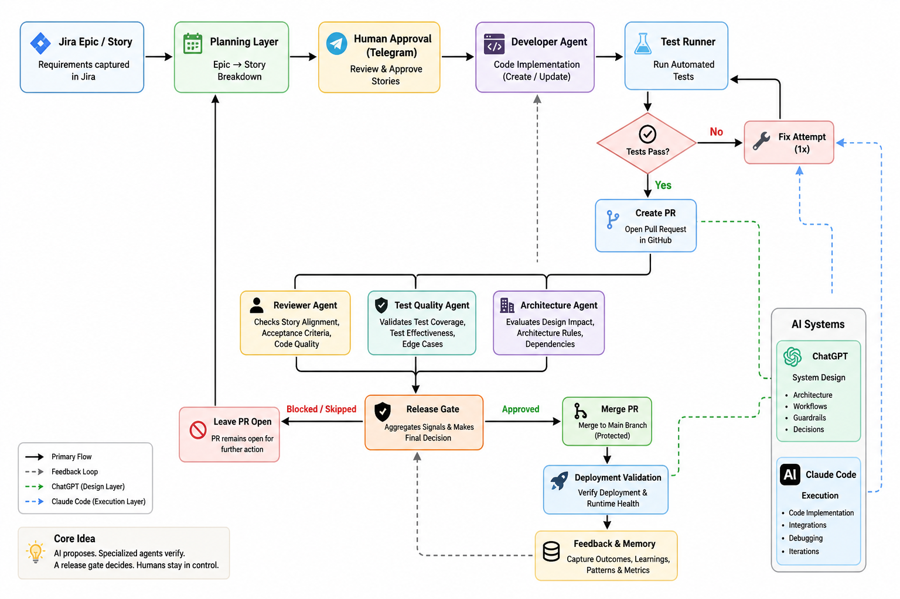
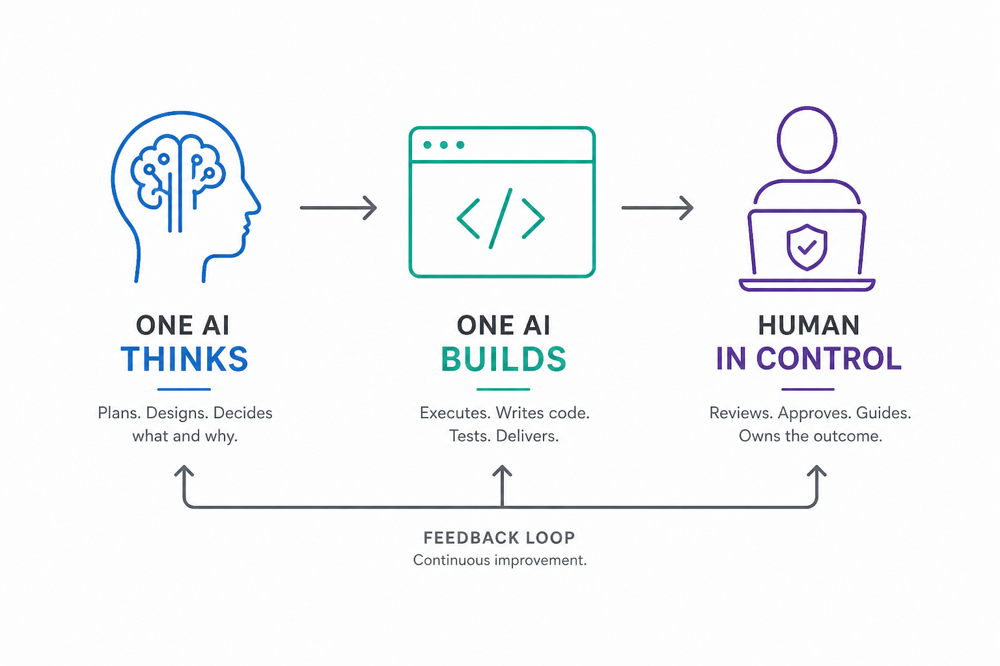

I spent about three days building a fairly complex software system. I didn’t write a single line of code. Instead, I used two AI systems — ChatGPT and Claude Code — in a very deliberate way to design and build it end-to-end. Not as a demo. Not as a proof of concept. But as a working software engineering system. The goal was simple, but not easy:
Build an AI-powered, human-in-the-loop software engineering workflow — where AI can plan, implement, test, review, and deliver code… under control.
I call it the ‘AI Dev Orchestrator’. To understand it better, let’s first look at the goal it was trying to achieve.
The Goal: From Requirement to Delivery
The goal was to build an AI assisted fully functional software engineering flow with human-in-the-loop by design.
Basically you give a requirement in Jira and AI picks up from there to finally deliver the software addressing that requirement.

At a high level:
- Jira captures requirements
- AI breaks Epics → Stories (human-approved)
- AI implements code
- Tests run (with one fix attempt)
- PR is created
- Independent AI agents review
- A release gate decides
- GitHub enforces checks
- Post-merge validation runs
- Feedback is recorded for future runs
So it’s not a coding assistant, not a prompt trick, it’s a system — where AI participates in software engineering under structure, constraints, and human control. To make this work in practice, I needed to think about how I would actually use AI systems — not just what they would do.

Two AIs, Two Roles: Separation by Design
ChatGPT was used as a System Designer. It managed the architecture, guardrails, workflows. Whereas Claude Code worked as an Executor, being responsible for code, integration, debugging. The important part wasn’t the tools. It was context separation.
- ChatGPT did not see low-level code/debug logs
- Claude did not hold product-level vision
One AI thinks. One AI builds. Neither gets overloaded. This single decision kept the system stable as it grew. Once the roles were clear, the next question was: how do you actually build something like this without losing control?
The Build Method: Design → Execute → Refine
This wasn’t “one big prompt”. Each phase followed a strict loop:
- Execution Guide
- Implementation (Claude)
- Summary + Feedback
- Gap Analysis
- Next Phase
Repeat this for each phase (18 phases, so far).
Execution guides were explicit: data models, APIs, constraints, non-goals. Claude executed. Then reported what actually happened. Design evolved from reality, not assumptions.

How It Was Actually Built (Not Just Prompted)
What surprised me the most was this:
This didn’t feel like prompting. It felt like engineering.
I didn’t sit down and write code. I didn’t try to generate the whole system in one go. Instead, I treated the two AI systems like members of a team. One of them designed the system. The other built it. And I sat in the loop — guiding both. The process looked simple on the surface:
But what made it work was discipline. I would first ask ChatGPT to define what we are building:
- the problem
- the constraints
- what we should not do
Then I would ask it to break that into a small, achievable phase. Not the whole system. Just the next step.
From there, ChatGPT would generate a detailed execution guide. Not ideas. Not suggestions. Actual instructions:
- what to build
- how to structure it
- what success looks like
Then Claude took over. It would implement that phase — step by step — on a real codebase. And then came the most important part. It would tell me what actually happened. Not what it intended. Not what it assumed.
- What worked
- What broke
- What didn’t make sense
I would take that back to ChatGPT and ask “Given this reality, what should change?” And that’s where the system evolved. This loop repeated again and again. Small phase, clear goal, real execution, honest feedback. Not everything at once. One decision at a time.
Over three days, this process ran through 18 phases. And somewhere along the way, it stopped feeling like “using AI” and started feeling like “working with a team that just happens to be AI-driven”.
The Turning Points That Changed the System
1) Closing the Loop (Phase 5)
Early versions of the system could generate code and create PRs — but they had no way to answer a critical question — Did the change actually work? So Phase 5 introduced a simple but powerful loop:
After generating code:
- tests were executed automatically
- if they failed, the system made one focused fix attempt
- tests were run again
- and only then was a decision made
Two important constraints made this reliable:
- bounded retries (no infinite loops)
- no silent success (failures were explicit and visible)
This was a turning point. The system stopped just producing output and started taking responsibility for outcomes.
2) Think Before Acting (Phase 6)
Until this point, the system only knew how to execute a Story. But real work doesn’t start with clean, well-defined Stories — it starts with messy requirements. So Phase 6 introduced a planning layer: Epic → Story (human-approved). I made a deliberate simplification here. Instead of Epic → Feature → Story, I chose Epic → Story.
Because more layers introduce more ambiguity — and ambiguity is where AI starts making things up.
Around the same time, I noticed something interesting. Claude would often fix the most obvious code issue, even if it had nothing to do with the Story. For example, a duplicate import would get fixed repeatedly across runs. It took me a while to realize what was happening. The system was optimizing for what was visible, not what was intended.
That insight led to a few important changes:
- tightening prompts to emphasize Story intent
- improving context selection so relevant files were prioritized
- refining sandbox behavior to avoid repeated “obvious fixes”
These changes made a noticeable difference. The system became better at aligning with intent — not just reacting to surface-level issues.
3) Learn, But Keep It Bounded (Phase 7)
At this point, the system could plan and execute — but it treated every run in isolation. It had no memory of:
- what worked
- what failed
- what needed retries
So Phase 7 introduced a feedback layer. We started capturing simple, structured signals:
- planning approvals and rejections
- execution failures and retries
- recurring patterns across runs
But instead of building a complex “AI memory,” I kept it deliberately constrained. Maximum 5 bullets. Small, explicit, and relevant. No long histories. No hidden state. No “mystical memory engine.”
4) Break the “Single AI” Model (Phase 8–10)
Up to this point, a single AI was effectively doing everything. That’s a problem. A system that generates code and evaluates its own output cannot be trusted. So we split responsibilities into independent agents:
- Developer Agent → writes code
- Reviewer Agent → checks story alignment
- Test Quality Agent → evaluates whether tests are meaningful
- Architecture Agent → checks system and design impact
- Release Gate → makes the final decision
Each agent looks at the same change — but from a different perspective. One insight here was especially important:
Passing tests ≠ good tests.
Tests can pass and still miss critical behavior. So instead of relying only on test results, a separate agent evaluates:
- what the tests actually cover
- whether they validate the intended behavior
All of these signals are then combined by a Unified Release Gate. Instead of scattered checks, the system produces a single outcome:
- approved
- skipped
- blocked
And most importantly — why. This is where the system started to resemble a real engineering team, not just a single AI tool.
5) Make It Safe (Phase 11)
By this point, the system could do something powerful — and risky. It could merge code. That’s where things change. Because once a system can modify real repositories, the problem is no longer capability — it’s control. So Phase 11 focused entirely on safety. We added:
- admin authentication
- webhook validation
- Telegram command controls
- GitHub write guards
- pause/resume kill switch
- audit logs for every critical action
These weren’t enhancements. They were necessary.
Power without control is just a faster failure mode.
6) Make It Behave Like a Team (Phase 12–13)
At this stage, the system could plan, build, and review. But it still had one major weakness — it would guess when things were unclear. So we fixed that. We introduced a clarification loop — instead of guessing, the system pauses and asks.
If something is ambiguous, the workflow moves into a waiting state until a human responds. Only then does it continue. At the same time, we made decisions visible and enforceable in GitHub. All internal checks — review, test quality, architecture, release — are published as native status checks on the PR. This ensures:
- decisions are transparent
- merges cannot bypass the system accidentally
- the source of truth lives where engineers actually work
No hidden logic. No silent decisions.
7) Make It Practical (Phase 14–16)
By this point, the system was functionally complete. But it still needed to be usable. So Phase 14–16 focused on making it practical for real-world use. We added:
- an admin dashboard to inspect runs, failures, and decisions
- multi-stack support (Python, Maven, Gradle, React, with safe fallback for unknown repos)
- post-merge validation to verify whether the deployed system actually works
One design choice here was intentional. Deployment failures are observed — not automatically rolled back. Because the goal was not to hide problems, but to surface them clearly. The system moved from being technically capable to operationally usable.
8) Make It Real (Phase 17)
Until this point, everything operated in controlled environments. Phase 17 changed that. The system was pointed at a real project. But before touching any code, it first built an understanding of the repository:
- scanned the repo structure
- detected the tech stack
- generated an architecture summary
- extracted coding conventions
This was stored as project knowledge and used to guide all future decisions. AI stopped operating blindly — and started working with context.
Why Iteration Worked Better Than Planning
If I had tried to design the entire system upfront, it would have looked very different. And it would have been wrong. Because the most important decisions didn’t come from design — they came from real execution gaps. For example:
- couldn’t validate correctness → added a test loop
- couldn’t plan effectively → added Epic → Story decomposition
- system forgot everything → added feedback and memory
- risk of self-approval → split into independent agents
- system became powerful → added safety and control
None of these were obvious at the start. They only became clear after the system was actually used. Each phase wasn’t about adding features — it was about fixing what the previous phase got wrong. That’s why iteration worked better than planning. The system didn’t evolve from ideas — it evolved from reality.
Rethinking How We Use AI in Engineering
Most AI workflows look like this:
Fast. Convenient. But shallow. This system worked differently:
Each step feeds into the next. Each outcome shapes the next decision. And more importantly, not one AI doing everything — but multiple AIs, each with a clear, bounded responsibility. That’s what makes the system stable.
What This Experience Actually Taught Me
Over three days, the system generated:
- ~14K lines of Python
- a similar amount of documentation
In a traditional setup, this would likely involve:
- multiple engineers
- different roles (backend, testing, CI/CD)
- several weeks, if not months
But the real takeaway is not speed. It's this:
A structured, iterative approach with AI works far better than trying to do everything in one go.
Small, verifiable steps made all the difference.
Why I Stopped at Phase 18
By this point, the system could:
- plan
- build
- review
- validate
- and learn
The guardrails were in place. Observability was strong. It was no longer a prototype. At that stage, adding more features would not have made it better. It would have made it more complex. So I stopped. Because the next set of lessons won’t come from designing more. They will come from using the system in the real world.
Repository
I have made the project repository available here: GitHub Repository
This is not a polished product or framework yet — it’s a working artifact of this experiment, including the code, phase-wise evolution, and supporting documentation.
What Happens Next
Up to this point, the focus was on building the system. Now the focus shifts to using it. There are three directions I want to explore:
1) Improve a real project
The first step is to apply this workflow to an existing codebase. Not a sandbox. Not a controlled demo. A real project — with real constraints, real trade-offs, and real consequences. This will test:
- how well the system understands unfamiliar code
- whether planning holds up beyond simple cases
- how often clarifications are needed
- how reliable the review and release gates actually are
2) Bootstrap a new project
The second direction is to use the system from scratch. Start with a simple idea. Let the system:
- break it into Stories
- generate the initial codebase
- evolve it incrementally
This will answer a different question — can this workflow act as a starting point — not just an improvement layer?
3) Improve the orchestrator itself
The third direction is the most interesting. Use the same system to improve the orchestrator. That means:
- creating Epics for enhancements
- decomposing them into Stories
- letting the system implement its own improvements
- reviewing them through its own agents
- merging changes under the same guardrails
The system becomes both the tool… and the subject. Up to now, everything has been controlled. The real test begins when:
- the system encounters messy requirements
- context is incomplete
- decisions are not obvious
That’s where you find out whether this is just a clever build… or a usable system.
Closing Thought
This wasn’t about proving that AI can write code. We already know that. It was about building a system where:
- one AI designs
- another executes
- independent agents verify
- humans stay in control
Because without that, you’re not building an engineering system. You’re just automating chaos.
This article was originally published on Medium and is being adapted here as part of my long-term knowledge hub.
Read original on Medium